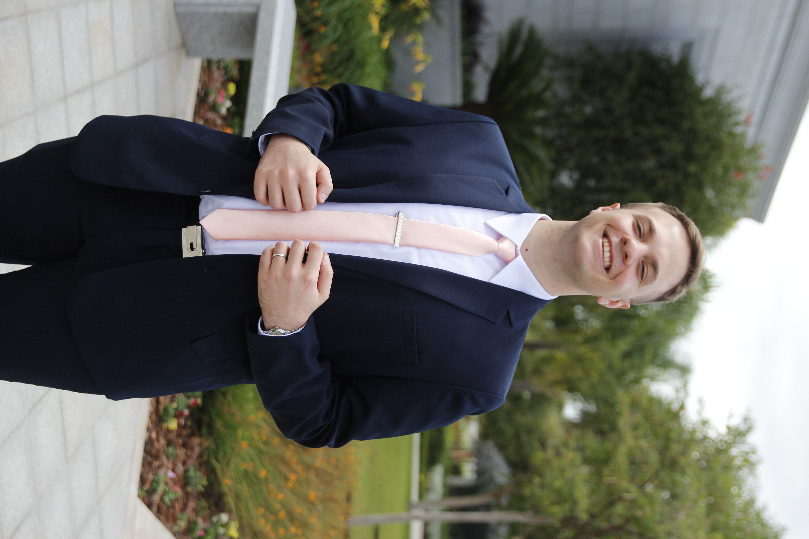

Lucila Sepulcri
Lucila Sepulcri, born in 1997 in Tokyo, combined her passion for technology and education to create Sepurukuri College.
After graduating in Mechanical Engineering from the University of Tokyo and excelling at Toyota as an innovative engineer,
Lucila envisioned a revolutionary virtual college. In 2024, she launched Sepurukuri College, a fully immersive, VR-based
educational institution featuring interactive classes and AI-driven holographic professors. Her groundbreaking work has
made high-quality education accessible worldwide, breaking traditional barriers and inspiring a new era of learning.
Santiago Cuadrado
Santiago Cuadrado, born in 1997, is a talented programmer who co-created Sepurukuri College alongside Lucila Sepulcri.
With a background in computer science and a deep expertise in virtual reality and artificial intelligence, Santiago brought
Lucila's vision to life through his technical skills. His innovative programming and development work allowed Sepurukuri
College to feature fully immersive virtual environments and interactive AI-driven professors. Santiago's contributions
were crucial in breaking down educational barriers, making high-quality, accessible learning a reality for students
worldwide.